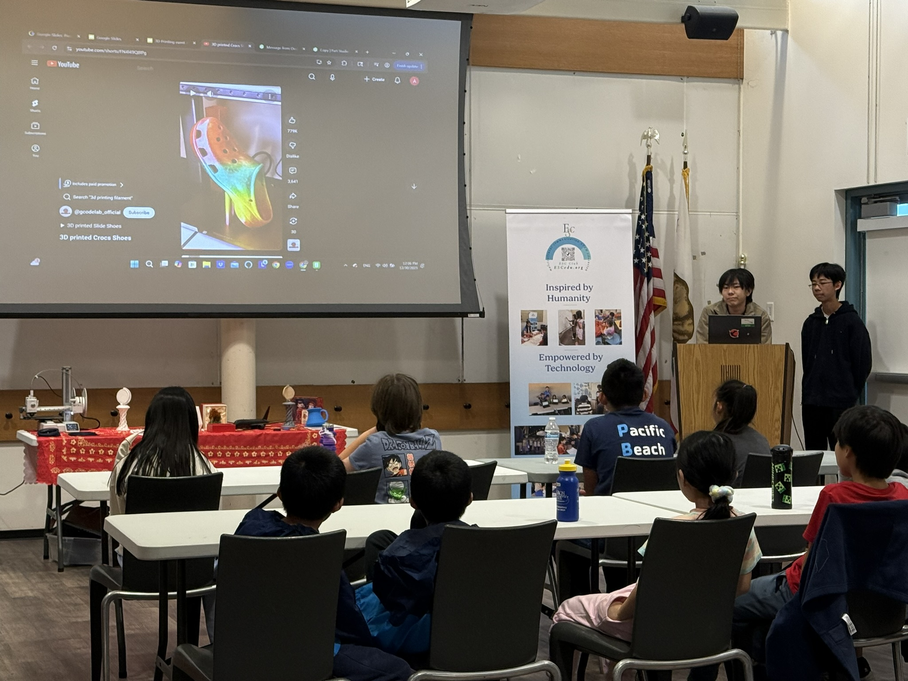

Drawing on more than 7 years of experiences, we tailor our services to each community member.
Rely on our expertise and commitment to delivering excellence in tutoring and services.

2026
June
June 18
ESC Club Brings STEM, Culture, and Cross-Border Friendship to CWB Tijuana Summer Camp Day
ESC Club proudly returned to CWB School in Tijuana on June 18, 2026, for its second annual Cross-Border STEM & Culture Camp Day, continuing its mission of promoting equal access to STEM education and cultural exchange for youth along the U.S.-Mexico border.
June 7
ESC Club and Riverview International Academy Celebrate the 2026 Summer Culture Day
ESC Club proudly partnered with Riverview International Academy (RIA) to host the 2026 Summer Culture Day on the RIA campus, bringing together students, families, educators, and community leaders for a vibrant celebration of multicultural learning and Chinese cultural heritage.
June 6
STEM Learning Day for San Diego Navy Families
ESC Club proudly hosted a STEM Learning Day for San Diego Navy Families on June 6, 2026, welcoming approximately 20 Navy families and their children to the ESC Club Chula Vista office for an engaging and educational STEM experience.
April

February

January

2025
December
December 30
ESC Club Launches 2026 New Year STEM Program with 3D Printing Workshop at Mira Mesa Library

To welcome the 2026 New Year, ESC Club proudly launched its new 3D Printing STEM Program, expanding beyond its established MIT App Inventor coding classes to introduce students and families to cutting-edge 3D technology that bridges STEM education and creative art design.
December 15
ESC Club Expands MIT App Inventor Fall Coding Program to Tijuana, Mexico Through Cross-Border Partnership
The ESC Club successfully expanded its Fall 2025 MIT App Inventor Coding Program beyond the U.S. border, launching a 10-session online coding series in collaboration with CWB Academy, a private school in Tijuana, Mexico. This initiative represents a major milestone in ESC Club’s mission to promote equitable access to STEM… Read More
December 13
Luna Culture Webinar for Mexico and Latina Communities-Rolling Tangyuan with Lola

On December 13, 2025, as part of ESC Club’s ongoing Luna Culture Promotion Series for Mexico and Latina communities, ESC Club proudly hosted a special online cultural webinar titled “Rolling Tangyuan with Lola.” The virtual event brought Chinese Lunar traditions directly into Latino households through storytelling, food, and family participation.
November
November 15
“Wrapping Dumplings with Chef Alex” Lunar Culture Webinar for Latino Families
On November 15, 2025, as part of ESC Club’s ongoing Lunar Culture Promotion and multicultural outreach to the Latino community, ESC Club student leader Alex Tang hosted an interactive online webinar titled “Wrapping Dumplings with Chef Alex.” The event brought together students and families from Riverview Academy, with most participants… Read More
October
October 18
ESC Club Brings Chinese Cultural Experiences to Riverview International Academy’s Cultural Festival

The ESC Club was honored to participate in Riverview International Academy’s annual Cultural Festival, a joyful celebration of multicultural education and community diversity. Located in the Lakeside School District, Riverview International Academy is a unique trilingual public school offering instruction in English, Spanish, and Mandarin Chinese, serving a vibrant Latina… Read More
September
September 27
AGI International AI/APP Innovation Challenge 2025 Award Ceremony
San Diego, CA — September 27, 2025 — The AGI International AI/APP Innovation Challenge proudly celebrated its 2025 Awards Ceremony on the beautiful campus of the University of California, San Diego (UCSD). ESC Club member are the winners of both junior high and Senior high gold reward. ESC club has… Read More
August
August 15
Aug 2025 ESC Club Hosts Second Summer Online MIT App Inventor Camp-Five Weekend Program
ESC Club proudly wrapped up its second annual summer online MIT App Inventor camp, held from July 13 to August 10, 2025. This five-week series, open to students from 5th through 10th grade, was organized and led by ESC’s North California subchapter captains,… Read More
July
July 26
ESC Club Hosts Summer Cultural Bash at Lakeside Public Library

On July 26, 2025, ESC Club partnered with Riverview International Academy PTSA to host a vibrant Summer Cultural Bash at the Lakeside Public Library. This special event aimed to promote Chinese culture and traditions while fostering multicultural understanding in the Lakeside community—a region… Read More
July 25
Brings Coding Education to Tijuana with CWB Summer Camp-Alex Tang

07/25/2025 a special day trip this summer, ESC Club proudly joined hands with three other student organizations to deliver a high-impact, hands-on coding class at the Children Without Borders (CWB) Academy in Tijuana, Mexico. Representing our club was Alex Tang, who led a dynamic session that introduced coding to students aged 8–16—many… Read More

June
June 12
Riverview Mandarin Immersion Program Promoting Cultural Understanding Through Chinese Dumpling-Making
Lakeside, CA – June 12, 2025 — On the final day of school, Ashley Fang, a passionate member of the ESC (East Side Community) Club, visited Riverview International Academy’s Mandarin Immersion Program to lead a hands-on cultural workshop celebrating a beloved Chinese culinary tradition—dumpling-making.
May
May 24
Volunteering in Asian Pacific heritage festival day
ESC Club Celebrates Chinese Heritage at San Diego Asian Pacific Cultural Festival Promoting Cultural Exchange Through Tradition, Art, and Community Engagement San Diego, CA – May 24, 2025 — Members of the ESC Club proudly volunteered at the 12th Annual Asian Pacific Cultural Festival of San Diego, held at Balboa Park’s… Read More

{kind=link}
{kind=link}
{kind=link}
{kind=link}
{kind=link}
{kind=link}
{kind=link}
{kind=link}
{kind=link}
April
April 6
2025 April San Diego AI @ASU GSV Show
ESC Club Explores the Cutting Edge at San Diego AI Show https://www.asugsvsummit.com/show By Jaden Shen; Jonas Shen San Diego, CA – April 6, 2025 – On April 6th, members of the ESC Club attended one of the most exciting AI-focused events of the year in San Diego. The day was filled with… Read More
February
February 2
2025 FEB Lunar New Year Culture Promotion
{kind=link}
In celebration of Lunar New Year, the ESC Club organized an engaging Diversity Culture Promotion event at one of San Diego’s public libraries. The event aimed to foster cultural understanding and appreciation by immersing both children and adults in the rich traditions of Chinese culture. Visitors were invited to sample… Read More
January
January 4
ESC Club Kicks Off 2025 with Exciting Recruitment Event and App Demos at Scripps Miramar Ranch Library

ESC Club Kicks Off 2025 with Exciting Recruitment Event and App Demos at Scripps Miramar Ranch Library San Diego, CA — January 4, 2025 — The ESC Club rang in the new year with a vibrant and inspiring Recruitment Event at the Scripps Miramar Ranch Library, inviting students to dive into a world… Read More
2024
December
December 7
2024 Flea Market for kids
{kind=link}
Date: [12/07/24 ] Time: [11:00AM-1:30PM] Location: [10760 Thornmint Rd, San Diego, 92127] Looking for a day of fun, creativity, and discovery? Bring your little ones to the Flea Market for Kids—an exciting event where kids can buy, sell, trade, and explore! What’s in Store? • Treasure Trove of Fun: Toys,… Read More
October
October 12
SAIC Celebrates Young Innovators at the SD STEAM App Innovators Challenge Award Ceremony
{kind=link}
Location: Hilton San Diego Delmar , CA 15575 Jimmy Durante Boulevard – Hilton Del Mar CA Time: 1:00-6:00 PM PST 10/12/2024 The San Diego STEAM App Innovators Challenge (SAIC) is thrilled to invite everyone to either show in person or virtually attend the SD STEAM App Innovators Challenge Award Ceremony! This… Read More
July
July 23
ESC Club Launches Global Virtual Coding Classes for Students Aged 9 and Above

ESC Club is excited to announce a series of virtual online coding classes for students aged 9 and above, available worldwide during the summer break of 2024. These innovative classes are designed to introduce young learners to the exciting world of coding without the need for difficult text-based languages. Class Features… Read More
May
May 29
2024.05.29-31 ESC Club Members Attend GEN AI Summit K12 Panel

ESC Club Members Attend GEN AI Summit K12 Panel San Francisco, CA – May 29-31, 2024 – The members of the ESC Club proudly attended the GEN AI Summit K12 Panel, bringing with them their innovative robotics project and the award-winning app "Feed Me Smart." This prestigious event, held in… Read More
April
April 11
The Congressional App Challenge: House of Code

Our journey began with the creation of Feed Me Smart, an innovative app designed to help users find affordable, accessible, and healthy food options. We proudly entered Feed Me Smart into the Congressional App Challenge, and it was selected to represent District CA-51, which earned us an opportunity to attend… Read More
2023
November
November 8
2023.11.08 Starting of the English/Spansish Speaker Leading Project
{kind=link}
2023.11.08 Starting of the English/Spansish Speaker Leading Project
2022
September
September 1
2022.09.01 Obtained Spanish DELE A1 Diploma
{kind=link}
（LINK）Members in ESC attended the DELE A1 for scholars test and obtained an internationally acknowledged Spanish Diploma certifying A1 level of competence and mastery of the Spanish language, granted by Spain's Ministry of Education, Culture and Sport.
2021
December
December 21
2021.12.21 Winter break Volunteering Teaching at Grace Academy

2021 12 21 Winter break Volunteering Teaching at Grace Academy. FLL class presentation to students.
October
October 31
2021.10.31 Halloween Meeting With Mr. Diego
{kind=link}
2021.10.31 Halloween Meeting With Mr. Diego
2017
November
November 12
2017 11.12 Initial ESC Group in Mesa Verde Library
{kind=link}
Today, the club is created. We had our first group learning in San Diego Mira Mesa Library.